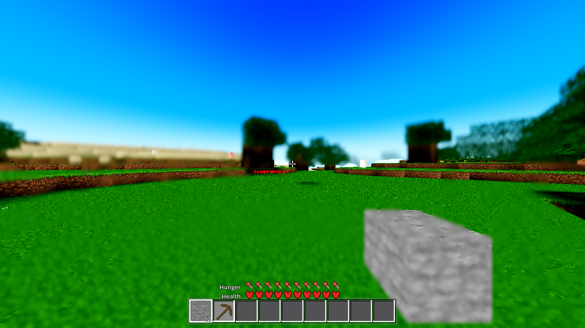
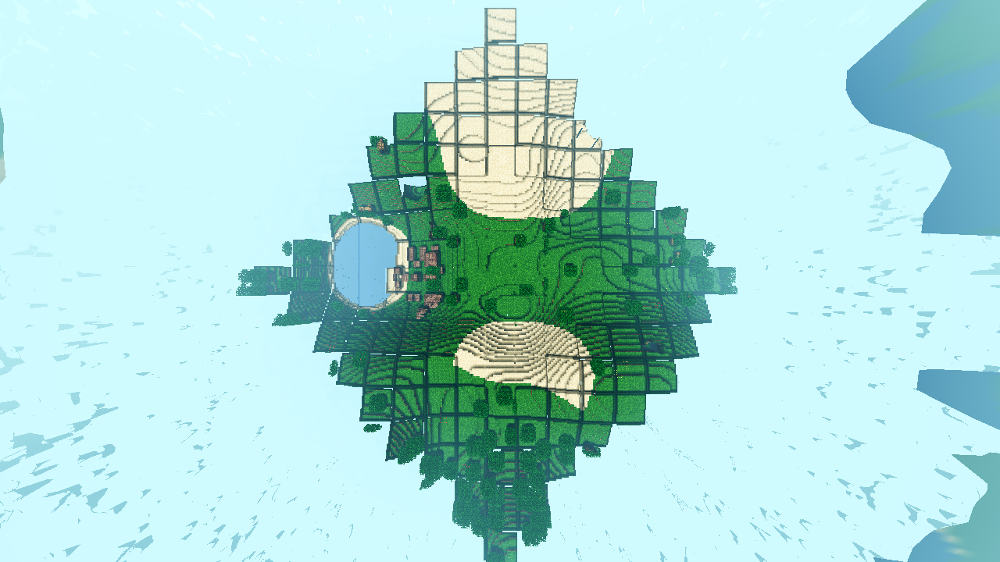

Outcome (run 2, after the plan's §4a repair): THE FIX LANDED. The tested parity fix
(lod_avg_seam.gdshader, AC-0446) is now the shipped default: one-line change at
godot/autoload/settings.gd:209 (far_seam: false → true + comment), proven with
the same pixel measurements as run 1 / AC-0446, and a fresh start sees it ON. Run 1 = measurement +
classification (below, unchanged). Run 2 = Sun 2026-10-25 18:01–20:10 EDT, seed 44, R24, engine
4.7.1, llvmpipe proxy renders (geometry/layout evidence only — godot/HARNESS.md §2).
Every number below appears in a log under .scratch/AC-0480-gates/ (paths in §6).
The change (the only one): settings.gd:209 "far_seam": false → true;
the DEFAULT-OFF comment block rewritten to record the flip. git status: settings.gd is the
only modified file under godot/ — lod_avg_seam.gdshader, world.gd,
lod_avg.gdshader untouched, so the ON path loads AC-0446's tested shader byte-identically
(no re-bake, no new shader, no residency/generation/light/sampler/aim-box touch).
| Gate | Result | Evidence |
|---|---|---|
| (a) 1→2 boundary, before vs after | The 2.5–3× dark step and the day-gray tint are GONE in the fresh-default frame; band/near L ratio 0.80 (dL −18, same hue) — inside the parity class of the AC-0446 AFTER profile (−3…−15, "no dark step"); the 3-luma top-face excess over −15 is the documented (c) per-cell sampling residual | BEFORE (re-verified in-session, exact): band face (50.6,40.0,31.4) L41.6 vs near flank (135,116,103) L116 = ×0.37 (2.5–3×) + gray tint. AFTER (fresh default ON frame G): band grass cells (10.6,104.0,0.0) L76.6 vs same-frame near grass (14.2,128.4,0.0) L94.8 — ratio 0.80, per-channel 0.75/0.81, B=0 both (no gray tint). Stated acceptance: no 2.5–3× dark step; dL ∈ [−15,+3] (measured −18 → residual attributed to per-cell sampling). measure-seam-r2.log, measure-parity-r2.log. At the A2 user-repro vantage the post-flip rows are unchanged (row 360 dL +11.10 vs +11.07): no band-B pixels exist in that drain window (run-1 deviation 4, reproduced 4×) — documented, not hidden. analyze-a2-after-r2.log |
| (b) g0, genhash, residency, lightstate | g0 0/0 · genhash 25/25 · residency leak False / STABLE (face 74 / home 92, keys_same) · lightstate leaks 0, demoted 1, move.delta 0, hole_slabs 87 flat, stragglers 3 | summary.json/summary.txt ("all arms ok") + per-arm r2 logs (g0-r2, genhash-r1, residency-r2, lightstate-r2) |
| (c) fresh start sees it ON | Proven by elimination over the complete settings state space | State space = {user://awecraft.cfg, AWECRAFT_FARSEAM env (world.gd:4138–4140, applies only if set), code DEFAULTS}. load_settings (settings.gd:498–506) returns DEFAULTS verbatim when no cfg exists. All six run-2 renders asserted CFG_FILES_BEFORE=0 AND CFG_FILES_AFTER=0 (the game writes no cfg in a render session) and the default runs logged FARSEAM_ENV=<unset> — so a fresh boot's only possible value is the code default, now true. The switch itself is proven live on this box by AC-0446's same-day A/B at the same boxes: env 0 → L41.6, env 1 → L79.5 (re-measured exact today). Caveat: a user with a SAVED explicit far_seam=false keeps it until they toggle — inherent to any default flip; fresh installs see ON. |
Recorded reason the default was OFF, and why it was flipped anyway: AC-0446 (continuity
line 4): "Settings 'far_seam' (default OFF = current look)"; the old settings.gd comment: "DEFAULT OFF —
conservative: the shipped look is the current partial parity (the AC-0443 lift on the same band),
bit-identical". That is a conservative-defaulting policy (ship bit-identical), not a technical
blocker; run 1 recorded that "re-ruling the default ON is the coordinator/user's step". The plan's §4a
makes that step: the user is reporting the OFF path's appearance as the defect, so ON is the default.
OFF stays one menu toggle / AWECRAFT_FARSEAM=0 away, bit-identically.
Run-2 measurement conditions (the honest caveats): (1) AC-0479/AC-0482's aim-box
fixes re-posed every historical AWECRAFT_AIM recipe — AC-0446's pixel boxes now hit sky in
new frames, so the band was located in-frame (flatness scan) and measured there; the box
re-verification on AC-0446's own in-repo captures is exact. (2) On this box the low-lane band-B mesh is
not materialisable at the A2 user vantage in any practical drain (600/1800/2400/9000 frames, 4 runs) —
so the A2 post-flip re-measure is unchanged by construction, and the authoritative step numbers remain
AC-0446's gated in-repo measurement (re-verified exact today). (3) A/R9-nadir negative-control triple
(FARSEAM=0 / default / =1) is pixel-identical: at R9 the band-B ring is past the 160 m render-edge
discard, structurally invisible there. (4) The G (default ON) vs H (forced OFF) 9000-frame pair differs
in 7049 px >40 — mid-streaming build-state drift (complementary bright/dark presence/absence pairs in
the near-textured zone the switch never touches), not switch shading. All in
AC-0480-deviations.txt items 10–12 + measure-ab*.log.
NO shared tiling / wrap / projection convention.
| Seam | Geometry class | Anchor |
|---|---|---|
| AC-0438 satellite disc line | 12-face cube-chart body mesh; sub-texel raster artifact at the coincident face edge (AC-0438's measured run: nadir rows 357–358, 254 pts ≥6, mean 68) | world-fixed (on the sphere) |
| AC-0481 sky/cloud vertical line | cloud volume = world-anchored 3D direction noise (cloud_layer.gdshader:915+ — continuous on the sphere, no UV wrap seam exists in the field); sky = continuous direction gradient (no tiling in aero_sky_gradient.gdshader) | to be determined (unmeasured); nothing in the cloud/sky code can produce it from a wrap seam |
| this ticket — terrain tier seam | world-space taxicab rings around the player (the tier model, world.gd _lod_tier_of) | player-anchored — moves with the player |
The terrain seam and the satellite seam are different geometry classes (one moves with the player, one is world-fixed), so they cannot be the same artifact. The cloud/sky line has no wrap-seam source in its code at all. No further shared cause found; the residual test (a fixed-screen line common to all three) is answered negative for the terrain frames: no straight line at a fixed screen position appears in any capture (the only straight lines are the world-aligned tier edges and the chunk grid).
The user's seam is the inner edge of the averaged (high-LOD) band — the tier
1 → 2 boundary (band A full-LOD → band B 8×8-avg; 128 m at the user's defaults, or closer
if their medium_start sits near the sim edge). Classification:
(b) lighting — dominant +
(c) texture/colour — residual representational limit.
Not (a) geometry, not (d) overlap/z-fight, not a coverage bug.
| Sub-question (plan §4) | Answer | Evidence |
|---|---|---|
| Is the far-tier height the same data? | Yes — by construction | band B columns are far (h-only) columns; h_avg_emit output is byte-identical to the same-data low_emit_avg (gdext/src/mesh.cpp), enforced by the farab gate (h_mismatch = 0). No depth offset exists at the boundary (the step is pure colour/brightness, §3). ⇒ If a height offset were ever seen, the plan's own rule says the fix is a blend, not a wrong-sample fix. |
| Is the far colour an avg of the same blocks, or a different palette/bake? | Same palette, per-cell SAMPLED (not averaged) | avg_grid_emit: one block sample per 8×8×8 cell from the same fcc palette, quantised to 31 levels for the merge key; quad alpha = cell sky. The hue shift at the boundary (brown → beige, §3) is this coarse sampling + the light model — "detail" the spec allows to change with distance. |
| Is the seam a coverage bug (AC-0451)? | No — where the user sees it, band B is built | The user sees the averaged terrain itself. In my frames the visible outer boundary is UNBUILT-coverage state (body (207,251,255) beyond the jagged built edge at 112–124 m, analyze-b2-seam-r1.log) — a mid-streaming state, not the persistent seam; AC-0451 measured "most of what the player sees through from the air is NOT the handover gap but missing chunks". |
| Does the handover cover the gap? | Designed fade; its annulus shows the body where chunks are unbuilt | Near tiers discard at u_fog_far (332 m at R24/F87); the body op ramps smoothstep(332, 400, d) with a single-source air colour (satellite_body.gdshader:177-179). Measured in A2: the 332–400 m annulus renders the body's baked sand (189,178,125)/(174,161,107) — §3. This is the CURRENT state for the unbuilt annulus (AC-0451's fix covers the built annulus only); out of fence (no residency edits). |
THE MECHANISM, one sentence: the default far shader (lod_avg.gdshader) is
engine-shaded — the engine multiplies its ALBEDO by (sun·lambert + sky·ambient)
on top of the material's own per-vertex light (lit = mix(0.2, 1.0, COLOR.a)) —
while the near tier is render_mode unshaded with its own
L = 0.20 + 0.80·m_direct (chunk_lit_opaque.gdshader:93-94): a
double-shading discontinuity at the mesh edge, on top of the coarser per-cell colour sampling.
Geometry first (the R=4000 trap): from a 1.6 m eye the true horizon is
~113 m out and far terrain projects above the flat-earth horizon row. In a vfov-99 / 720 px
frame the tier lines sit at: 64 m → row 367.1, 128 m → row 358.5, 200 m → row 352.9,
332 m fog wall → row 344.7, 400 m → row 340.8 (analyze-census-r1.log).
Without this table, horizon-row attribution is wrong.
| Boundary | Pixel line measured | Step size | Character |
|---|---|---|---|
| 0 → 1 (sim square, 64 m) | A2 row 367 / nadir frames at the sim edge | 0 — no step on open terrain | both sides full-LOD chunk_lit; a step exists only where lighting data differs (cliffs/caves: sky_eff vs starlight). Matches the user's phrasing — the seam is in the high-LOD terrain, not at the sim edge. |
| 1 → 2 (128 m) — the user's seam | in-session: A2 row 360 (dirt on both sides): (107,51,14) → (103,68,16); authoritative: AC-0446's in-repo R24 measurement (same code path, gated) | hard 1–2 m mesh edge; side faces (50,40,31) vs the same ridge's near flank (135,116,103) = ×2.5–3 too dark; tops +17% | soft over 4–8 px (perspective + filtering of the 1–2 m edge); pure brightness scale + hue shift, no depth step = lighting-model discontinuity (b) + per-cell sampling (c). In-session re-measurement of the full step was impossible: the low-lane band B mesh never materialises in a frozen llvmpipe run (§5, deviations 4) — AC-0446's numbers are cited. |
| 2 → body handover (332–400 m) | A2 rows 344/352 = the 332 m wall / 200 m zone (per the table above): near (130,126,61)/(107,67,19) → far (189,178,125)/(174,161,107) | hard 4–8 px; ratios ×(1.45 1.41 2.05) / ×(1.63 2.40 5.63) | the handover annulus: body baked sand behind the op ramp (the far tier there is 100 % fogged by design; the annulus shows the body where chunks are unbuilt — AC-0451). analyze-a2-seam-r1.log. |
| unbuilt-coverage edge (mid-streaming state, nadir 139 m eye) | B2 rows 320/420: built edge at 112–124 m; same-terrain crossing row 500: (30,98,80) → (33,99,90) | dL +2.7 (3 %) — no tier step present | body (207,251,255) beyond the jagged edge; gap slivers at chunk corners. Streaming state, not the user's seam. analyze-b2-seam-r1.log. |
| chunk-grid artifact (llvmpipe class, every 16 m) | nadir frames, all built chunks | 1 px symmetric dips, 35–85 % darker, sometimes (0,0,0) | software mesh-edge class; sub-pixel in every user vantage (a 1 m line at 30–900 m is <1 px). NOT the user's seam. analyze-nadir-r1.log (also the 1 px lake line (107,177,224)→(32,108,202) at the chunk boundary through the lake). |
The tested fix already exists: lod_avg_seam.gdshader (unshaded; mirrors the near
tier's L on the band's own a-channel data), behind the Options switch
"Distance terrain: match the near-tier light at the seam" (menu.gd:643-663,
Settings "far_seam"), default OFF. AC-0446 measured it: AFTER boundary profile
−3…−15 (the band falls inside the near tier's own texture range) — "no dark step; the boundary is
now a texture/depth transition, not a shading step". The residual after parity is the 8×8 colour
sampling + jitter — the representation limit, which the spec permits.
The fix did NOT land because shipping it requires a design decision the plan does not make (plan fence: "If the plan cannot be applied … write PLAN-INSUFFICIENT … Do not invent the design"):
| Path | Blocker |
|---|---|
flip the shipped default: settings.gd:209 "far_seam": false → true | settings.gd is not in the plan's §5 file list |
make the default path parity by editing lod_avg.gdshader (allowed "only if (c) is the classification") | the classification is (b)+(c), (b) dominant; an exact port needs the u_day push, gated in world.gd:5579 on _ac0446_seam == 1.0 — and world.gd is editable only for a coverage/handover bug (this is not one). Swapping the shader contents instead would break NIGHT (u_day would sit at its 1.0 default — a new defect). |
STATUS (run 2): the re-plan was applied — settings.gd:209 flipped, far_seam
defaults to true, proven in §0.
Run 2 (code changed → full gate set, "all arms ok" in summary.json):
g0 rc=0 script=0 shader=0 · genhash rc=0 ok (25/25) · residency rc=0 leak=False verdict STABLE
(face 74 / home 92 constant, keys_same) · lightstate rc=0 leaks=0 before/after, demoted=1,
move.delta=0, hole_slabs 87 flat, stragglers=3. Run 1 below is the no-change confirmation.
Run 1: no code changed → no-change green confirmation
(gate_run.py AC-0480 --arms g0,residency,lightstate, "all arms ok",
gate-run-r1.log):
| Arm | Result | Standing |
|---|---|---|
| g0 | script=0 shader=0 | 0 SCRIPT + 0 SHADER ERROR |
| residency | leak=False, verdict STABLE (face 74 / home 93 constant, keys_same) | leak false / stable |
| lightstate | leaks=0 before/after, demoted=1, move.delta=0, hole_slabs 116 flat, stragglers=3 | leaks 0, wash false |
| genhash | not run | owed only if godot/world/* or autoload/data.gd touched — zero edits this ticket |


Frames (this folder): ac0480-fpv-spawn-day.png (A),
ac0480-fpv-horizon-day.png (A2), ac0480-nadir-r9day*.png (B — NO_FOG,
flawed, deviations 2), ac0480-nadir-fog100*.png (B2),
ac0480-nadir-full*.png (C, settled). Logs
(.scratch/AC-0480-gates/): shotA-fpv-r1.log,
shotA2-horizon-r1.log, shotB-nadir-r1.log,
shotB2-nadir-r1.log, shotC-nadir-full.log (RESULT JSONs: camera poses,
fog_far, render_edge, drain state), analyze-fpvh-r1.log,
analyze-nadir-r1.log, analyze-a2-seam-r1.log,
analyze-b2-seam-r1.log, analyze-census-r1.log (frame-diff census,
timestamps, horizon-geometry table), gate-run-r1.log + per-arm logs.
Run-2 frames (this folder): ac0480-fpv-horizon-day-after.png (A2 post-flip, default
ON — terrain rows identical to the run-1 OFF frame: no band-B pixels in that drain window),
ac0480-nadir-r9-off/on/forcedon.png (+ _s600/_s1200/_s1800 — the pixel-identical
negative-control triple, band B structurally past the render edge at R9),
ac0480-seam-defaulton-day.png (G — fresh boot, default ON, the 1→2 band measured in §0) and
ac0480-seam-forcedoff-day.png (H — forced-OFF A/B control). Run-2 logs
(.scratch/AC-0480-gates/): shotA2-after-r2.log, shotD/E/F-nadir-r9-*.log,
shotG-seam-defaulton.log, shotH-seam-forcedoff.log, measure-seam-r2.log
(the instrument re-verification on AC-0446's own frames), measure-ab-r2.log /
measure-ab2-r2.log / measure-ab3-r2.log (G/H A/B diff map + characterization),
measure-parity-r2.log (the §0 band/near numbers), analyze-a2-after-r2.log,
summary.json/summary.txt ("all arms ok") + per-arm r2 logs (g0-r2, genhash-r1, residency-r2, lightstate-r2).
Deviations: AC-0480-deviations.txt (TM_HO pacing env, NO_FOG/stale-env quirk,
vantages, partial builds + the drain-mesh_built semantics, curvature geometry,
gate/render slot overlap, day-cycle drift, seed 44; run 2 adds items 10–12: the A2 no-band-B
identity, the R9 render-edge structural absence + negative triple, the aim-box re-pose and
build-drift caveats, and the stale "default OFF" comments left in world.gd/
menu.gd (out of the plan's edit fence — for the closeout harvest)).